Power Report - Widgets - Kalender
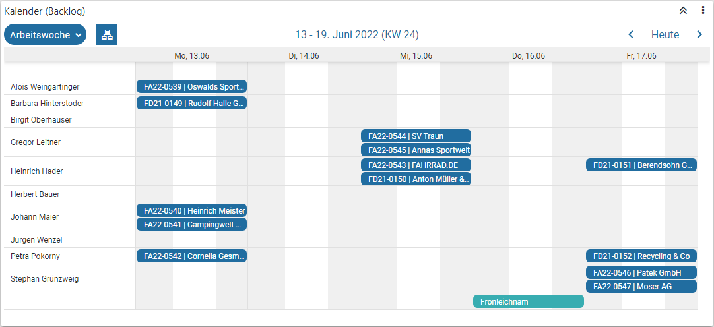
Mit Hilfe des Widgets "Kalender" wird das Datenmaterial in Form eines Kalenders dargestellt, wobei zumindest ein Feld des Typs "Datum" in der Datenquelle vorhanden sein muss. Folgende Spezialfunktionen stehen in diesem Widget zur Verfügung:
Ø Ansicht
Mit Hilfe einer Auswahlliste kann entschieden werden, in welcher Ansicht der Kalender dargestellt werden soll. Die Standardansicht wird hierbei in den Einstellungen definiert.
Ø  Gruppierung
Gruppierung
Sobald mit einer Gruppierung gearbeitet wird (siehe Tabelle "Gruppierung" in den Einstellungen) wird der Button "Gruppierung" dargestellt. Durch Anwahl wird die Gruppierung temporär ausgeschaltet.
Ø
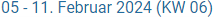
Zeitraum / KalenderIn der Mitte des Kalenders wird der aktuell dargestellte Zeitraum ausgegeben. Durch Anwahl dieser Information wird ein Minikalender zur schnellen Navigation geöffnet. Der aktuelle Tag wird in hellblau und die aktuelle Woche in grau dargestellt.
Beispiel
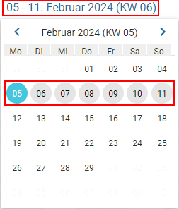
Ø Navigation
Mit Hilfe der Navigation-Buttons kann - je nach Ansicht - zwischen den Tagen / Wochen / Monaten / Jahren geblättert werden.
Ø Heute
Durch Anwahl des Buttons "Heute" wird - je nach Ansicht - auf den aktuellen Tagen / die aktuelle Woche / den aktuellen Monat / das aktuelle Jahr gewechselt.
Ø Live-Kalender-Widget
Handelt es sich bei der Ausgabe um einen WinLine Kalender, so können abhängig vom Listentyp der WinLine LIST-Liste die Einträge im Kalender per Drag & Drop verschoben oder vergrößert bzw. verkleinert werden (nähere Informationen zu den einzelnen WinLine LIST-Typen entnehmen bitte dem Kapitel WinLine Kalender).
Beispiel

Einstellungen
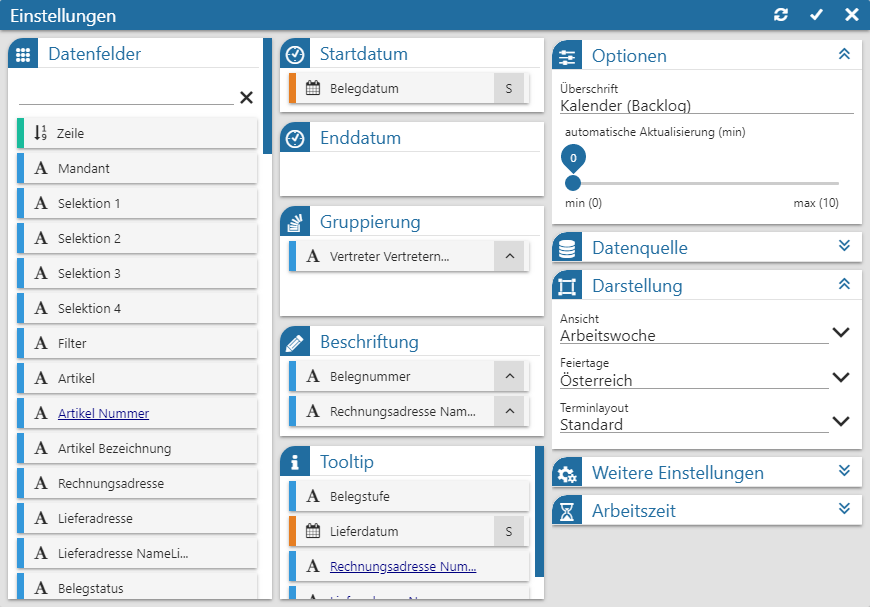
Folgende Eingabefelder, Einstellungen und Informationen stehen zur Verfügung:
Datenfelder

Ø Tabelle "Datenfelder"
In dieser Tabelle werden alle Felder der Datenquelle dargestellt, welche per Drag & Drop in die Tabellen "Startdatum", "Enddatum", "Gruppierung" und "Beschriftung" übergeben werden können. Der Power Report unterscheidet hierbei nach den folgenden Datentypen:
ü  - Alphanumerisch
- Alphanumerisch
Es handelt sich um ein
Feld mit alphanumerischen Inhalt.
ü  - Text
- Text
Es handelt sich um ein Feld mit
Langtext.
ü  - Bild (Grafik)
- Bild (Grafik)
Es handelt sind um ein
Feld mit einem Bild als Inhalt. Zur besseren Darstellung wird anstatt der Grafik
der Name des Bilds im Widget angezeigt.
ü  - Datum
- Datum
Es handelt sich um ein Feld des
Typs "Datum", wobei das Darstellungsformat bei Hinterlegung in den Tabellen
"Beschriftung " und "ToolTip" selber bestimmt werden darf. Hierfür muss nur das
Symbol  neben der Beschreibung des
Felds angeklickt werden, wodurch sich die folgende Auswahl öffnet:
neben der Beschreibung des
Felds angeklickt werden, wodurch sich die folgende Auswahl öffnet:
ü - Zahl (Measure)
Es handelt sich um ein
Feld mit numerischen Inhalt.
Hinweis
Mit Hilfe der Suchzeile kann über eine Volltextsuche nach Datenfeldern gesucht werden, wobei das %-Zeichen als Platzhalter verwendet werden kann.
Datum
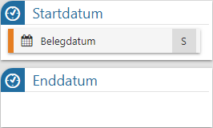
Ø Tabelle "Startdatum"
An diese Stelle wird jenes Datumsfeld hinterlegt, durch dessen Inhalt der Kalendereintrag gebildet (positioniert) werden soll.
Achtung
Bei dem "Startdatum" handelt es sich um ein Pflichtfeld. Das "Enddatum" hingegen ist optional.
Ø Tabelle "Enddatum"
An diese Stelle wird jenes Datumsfeld hinterlegt, durch dessen Inhalt das Ende des Kalendereintrags gebildet werden soll. Gibt es kein Enddatum, so wird das Startdatum automatisch als Enddatum herangezogen. Liegt das Enddatum wiederum vor dem Startdatum, so wird kein Kalendereintrag gebildet!
Achtung
Handelt es sich um ein Live-Kalender-Widget (siehe auch Kapitel WinLine Kalender), so muss ein Enddatum hinterlegt werden. Dieses kann auch gleich dem "Startdatum" sein. Sollte das Datum wiederum keinen Inhalt aufweisen, so wird automatisch das Startdatum als Enddatum verwendet.
Gruppierung
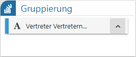
Ø Tabelle "Gruppierung"
Mit Hilfe der Tabelle "Gruppierung" können die
Kalendereinträge nach den hier angegebenen Datenfeldern (maximal 2) gruppiert
werden, d.h. der Kalender wird in Form eines Zeitstrahls ausgegeben. Die
Sortierung (auf- oder absteigend) kann wiederum durch Anwahl des Symbols  definiert werden.
definiert werden.
Hinweis
Sind 2 Gruppierungen vorhanden, so kann die Hauptgruppierung zusammengeklappt werden. Des Weiteren können keine Felder des Typs "Datum" als Gruppierung verwendet werden.
Beispiel
In dem Kalender wird nach "Artikelgruppe" und "Vertreter" gruppiert. Die Hauptgruppierung "Artikelgruppe" kann pro Gruppe auf- und zugeklappt werden.
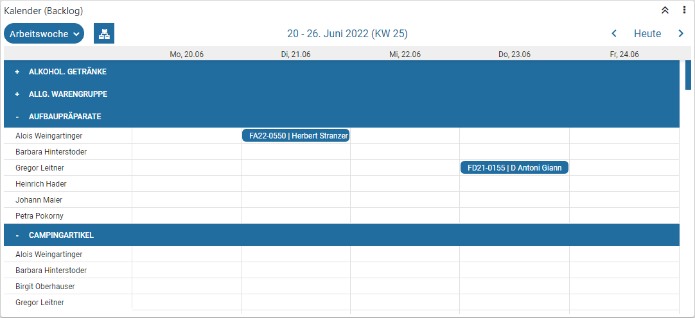
Beschriftung
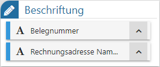
Ø Tabelle "Beschriftung"
In dieser Tabelle werden jene Felder zugewiesen, welche für
die Betitelung des Kalendereintrags genutzt werden sollen. Durch Anwahl des
Symbols kann der Inhalt der
Beschriftung auf- oder absteigend sortiert werden.
Tooltip
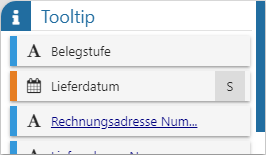
Ø Tabelle "ToolTip"
Mit Hilfe der Tabelle "ToolTip" kann der Inhalt der ToolTips definiert werden, wobei dieser durch einen Klick auf einen Kalendereintrag angezeigt wird. Die Informationen "Beschriftung" und "Zeitraum" werden immer dargestellt.
Beispiel
Zur besseren Orientierung werden die Informationen "Belegstufe", "Lieferdatum", "Rechnungsadresse Nummer" und "Lieferadresse Nummer" im ToolTip angezeigt. Der Button "Filter" löst den Quickfilter aus (siehe auch Feld "Filterfeld").
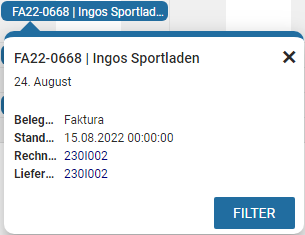
Optionen
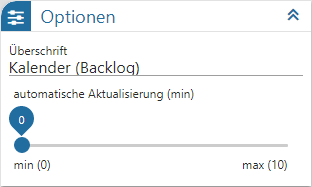
Ø Überschrift
An dieser Stelle wird die Bezeichnung des Kalenders definiert.
Ø automatische Aktualisierung (min)
An dieser Stelle kann definiert werden, ob sich der Inhalt des Kalenders automatisch aktualisieren soll. Mit der Einstellung "0" findet keine Aktualisierung statt.
Datenquelle

Ø Datenquelle
Dieses Informationsfeld zeigt den Namen der zu Grunde liegenden Datenquelle an.
Ø Datenherkunft
An dieser Stelle kann mit Hilfe einer Auswahlliste definiert werden, aus welchem Bereich der Datenquelle die Daten des Widgets stammen sollen. Die Auswahl "aktuell" steht immer zur Verfügung und spiegelt die im Ausgangsfenster gewählte Datenquelle (temporäre Datenquelle, Snapshot, View oder MasterView) wieder.
Hinweis
Gibt es für die Datenquelle mehrere Snapshots, so sind diese über den Eintrag "xxx (statisch)" (xxx => Name der Auswertung) zusammengefasst. Innerhalb der Snapshots erfolgt die weitere Selektion über den Widget Filter.
Ø  Widget Filter
Widget Filter
Durch Anwahl dieses Buttons wird das Fenster Widget Filter geöffnet. In diesem kann die genutzte Datenquelle nach frei definierbaren Kriterien eingeschränkt werden.
Hinweis
Handelt es sich nicht um eine importiere Datenquelle, so werden die folgenden Selektionskriterien automatisch vorgegeben, wobei ein Editieren selbstverständlich möglich ist:
ü Mandant
Es wird durch die
Filterzeile "Mandant = aktuell" automatisch auf die Daten des aktuellen Mandaten
eingegrenzt.
ü Selektion 1 bis 4 / Filter
Es
wird automatisch auf die Daten jenes Snapshots eingegrenzt, über welchen der
Power Report ausgegeben wurde. Die Filterzeilen hierzu lauten "Selektion X =
aktuell" bzw. "Filter = aktuell".
Hinweis
Mit Hilfe des Widgets Datenquellen Info ist jederzeit nachvollziehbar, was sich gerade hinter "aktuell" verbirgt (Einstellung "Aktuelle Sel.").
Darstellung
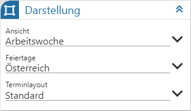
Ø Ansicht
An dieser Stelle kann entschieden werden, in welcher Ansicht der Kalender dargestellt werden soll. Hierfür stehen folgende Optionen zur Verfügung:
ü Tag
ü Woche
ü Arbeitswoche
ü Monat
ü Jahr
ü Agenda
Hinweis
Im Kopfbereich des Kalenders kann die Ansicht jederzeit temporär umgestellt werden.
Ø Feiertage
Über die Auswahl "Feiertage" kann die Feiertagsanzeige im Kalender aktiviert werden.
Ø Terminlayout
An dieser Stelle kann das Grundlayout der Termine hinterlegt werden.
ü Standard
ü weiß
ü schwarz
ü dynamisch
Weitere Einstellungen
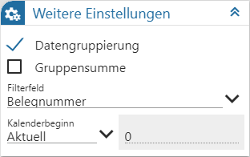
Ø Datengruppierung
Mit Hilfe dieser Option werden die Daten der Datenquelle komprimiert, d.h. es findet eine Zusammenfassung von gleichlautenden Daten statt. Die Gruppierung erfolgt hierbei über jene Datenfelder, welche in den Tabellen "Startdatum", "Enddatum", "Gruppierung" und "Beschriftung" hinterlegt wurden.
Hinweis
Bei einer Datengruppierung werden Zahlenfelder automatisch summiert. Des Weiteren steht diese Funktion bei "Live-Kalender-Widgets" nicht zur Verfügung.
Ø Gruppensumme
Durch Aktivierung dieser Option wird in der Zeile der Hauptgruppierung eine Summe über die nachfolgenden Einträge angezeigt. Die Summierung ist hierbei abhängig von der gewählten Ansicht, d.h. bei Ansicht "Tag" erfolgt eine Summierung pro Stunde, bei z.B. "Monat" eine Summierung pro Tag.
Hinweis
Die Option "Gruppensumme" wird nur angeboten, wenn zumindest ein Datenfeld in der Tabelle "Gruppierung" hinterlegt wurde. Wird dort nicht mit einer Doppelgruppierung gearbeitet, so erzeugt die WinLine die Hauptgruppierung "Summe".
Beispiel
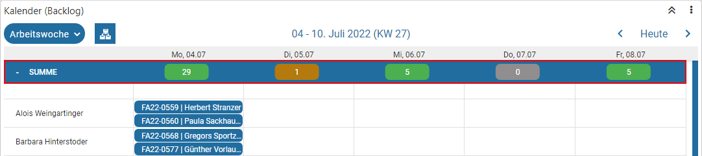
Ø Filterfeld
Wenn über den ToolTip eines Kalendereintrags ein Quickfilter ausgelöst werden soll, so muss an dieser Stelle jenes Feld, nach welchem gefiltert werden soll, angegeben werden.
Ø Kalenderbeginn
Im Standard wird der Kalender immer im Kontext zum aktuellen Datum dargestellt. Wenn eine abweichende Startanzeige gewünscht ist, so kann dieses hier hinterlegt werden.
Beispiel
Es soll zunächst immer die kommende Woche angezeigt werden. Dementsprechend wird "Woche + / -" mit der Anzahl "1" gewählt.
Arbeitszeit
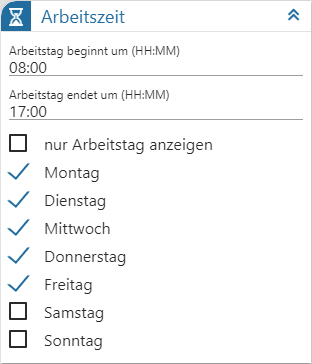
Ø Arbeitstag beginnt um (HH:MM) / Arbeitstag endet um (HH:MM)
In diesen zwei Feldern kann die "Kernarbeitszeit" definiert werden. Damit wird dann in weiterer Folge gesteuert, zu welcher Zeit die Darstellung im ungruppierten Kalender "beginnen" soll. Wird z.B. bei "Arbeitstag beginnt um (HH:MM)" 08:00 Uhr eingetragen, so wird in der Kalenderansicht die erste Zeile um 8:00 Uhr dargestellt. Frühere Termine / Einträge werden zwar auch dargestellt, dafür muss aber nach "oben" gescrollt werden.
Ø nur Arbeitstag anzeigen
Durch Aktivierung dieser Option wird in den Ansichten "Tag / Woche / Arbeitswoche (jeweils ungruppiert)" bzw. "Tag (gruppiert)" nur mehr der Arbeitstag angezeigt. D.h. alle Termine, die nicht innerhalb des Arbeitstags liegen, werden nicht angezeigt. Sollte ein Termin in den Tag hinein- oder herausragen, so wird dieser gesondert gekennzeichnet.
Beispiel
Der Arbeitstag beginnt um 08:00Uhr und endet um 17:00Uhr. Am 13.02.2024 findet ein Teil des Termins nach der Arbeitszeit statt, am 16.02.2024 davor.
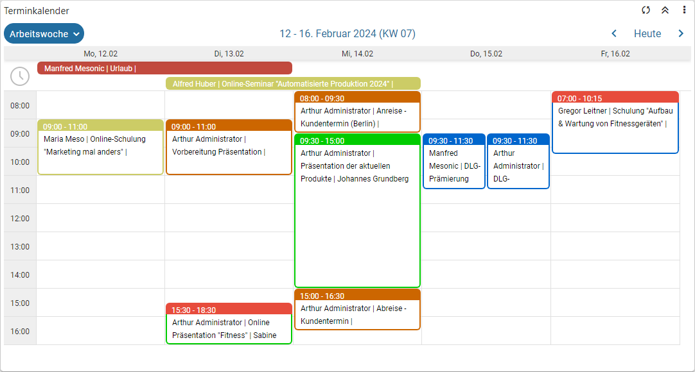
Ø Arbeitstage (Montag bis Sonntag)
Im Bereich "Arbeitstage" kann definiert werden, welche Tage zur Arbeitswoche gehören. All jene Tage, die nicht zur hinzuzählen, werden im Kalender mit einer grauen Schraffierung unterlegt.
Hinweis
Wird mit einer doppelten Gruppierung gearbeitet, so wird diese Funktion automatisch nicht angewendet.
Buttons

Ø Aktualisierung
Mit Hilfe dieses Buttons werden die Einstellungen gespeichert, direkt angewendet und das Einstellungsfenster bleibt geöffnet.
Ø Ok
Durch Anwahl des Buttons "Ok" werden die Änderungen angewendet und das Fenster geschlossen.
Ø Ende
Durch Anwahl des Buttons "Ende" wird das Einstellungsfenster geschlossen und nicht gespeicherte Änderungen verworfen.